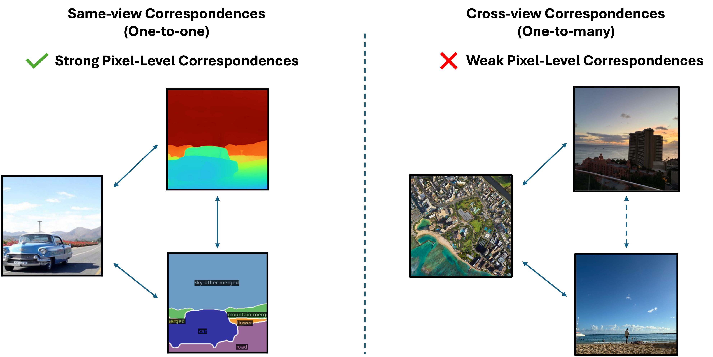
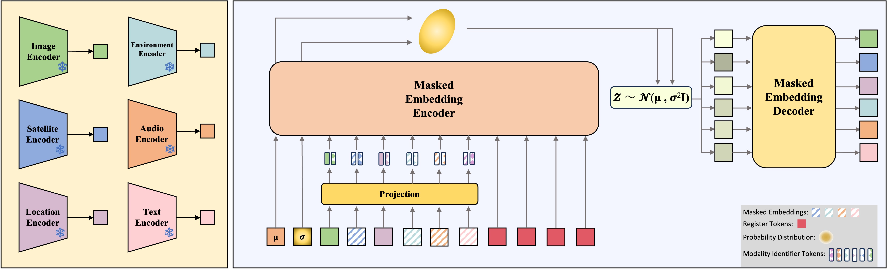
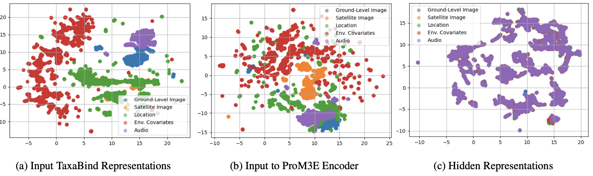
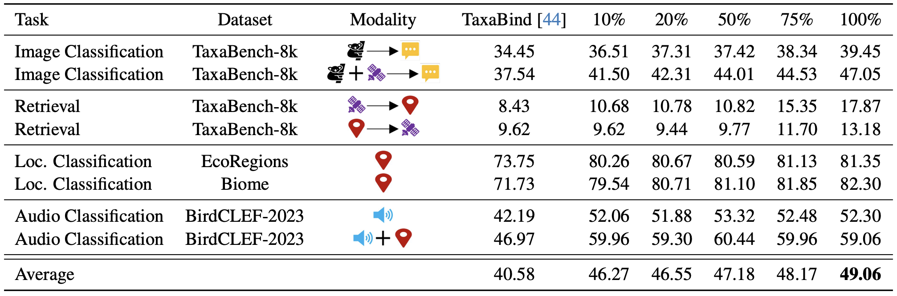

We introduce ProM3E, a probabilistic masked multimodal embedding model for any-to-any generation of multimodal representations for ecology. ProM3E is based on masked modality reconstruction in the embedding space, learning to infer missing modalities given a few context modalities. By design, our model supports modality inversion in the embedding space. The probabilistic nature of our model allows us to analyse the feasibility of fusing various modalities for given downstream tasks, essentially learning what to fuse. Using these features of our model, we propose a novel cross-modal retrieval approach that mixes inter-modal and intra-modal similarities to achieve superior performance across all retrieval tasks. We further leverage the hidden representation from our model to perform linear probing tasks and demonstrate the superior representation learning capability of our model.




@inproceedings{sastry2025prom3e,
title={ProM3E: Probabilistic Masked MultiModal Embedding Model for Ecology},
author={Sastry, Srikumar and Khanal, Subash and Dhakal, Aayush and Lin, Jiayu and Cher, Dan and Jarosz, Phoenix and Jacobs, Nathan},
journal={IEEE/CVF Conference on Computer Vision and Pattern Recognition},
year={2026}
}